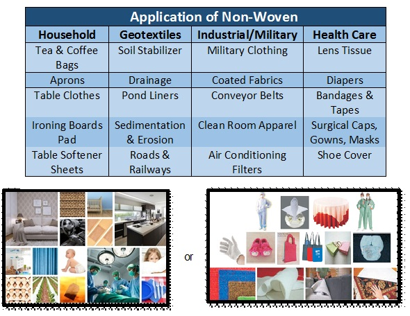
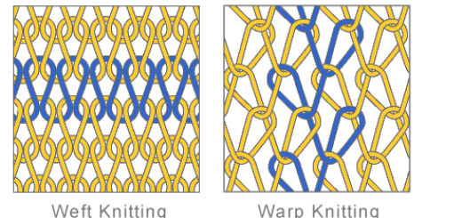

Fibres and textiles
Table of Contents
1 Natural Fibres
- Natural fibres fall into two categories - animal and vegetable.
Animal
- Examples of fibres from animals are wool and leather.
- Wool
- The first step in making wool fabric is shearing it from sheep, then its quality is checked and it is prepared for spinning.
- The wool is spun into long strands then the strands are woven into fabric.
- ADVANTAGES: It holds moisture without feeling wet, plus it is a great thermal insulator.
- DISADVANTAGES: It can be scratchy and uncomfortable to wear, and heat and moisture can cause it to felt.
Vegetable
- Examples of a fibre from vegetables are cotton and silk.
- Cotton is made into fabric after first being cleaned, bleached, spun into threads, and woven.
- The process is fairly complicated and is mostly done by machine.
- Cotton can be washed in any water temperature, although higher temperatures are better for getting stains out… but hot water can shrink the fabric.
- ADVANTAGES: It’s breathable, inexpensive, resists static, and it can withstand high heat.
- DISADVANTAGES: It’s prone to shrinking and stretching, it dries slowly, and it isn’t wrinkle resistant.
2 Synthetic fibres
Polyester
- Polyester is a synthetic fiber derived from coal, air, water, and petroleum. Polyester fibers are formed from a chemical reaction between an acid and alcohol.
- In this reaction, two or more molecules combine to make a large molecule whose structure repeats throughout its length.
- You can wash polyester in your washing machine with either cold or warm water, and then you can dry it in your machine as well.
- ADVANTAGES: It’s hard to stain, it holds its shape, and it doesn’t wrinkle.
- DISADVANTAGES: It doesn’t absorb dyes, it doesn’t feel as soft as cotton does, and it is highly shrinkable.
Acrylic
- Acrylic can either be wet or dry spun. They use solvents to dissolve the polymer and then solidify them for their spinning process.
- ADVANTAGES: Retains color well, has a wool- like texture, and is resistant to wrinkling.
- DISADVANTAGES: Relatively poor insulation, and it melts as it burns.
3 Woven textiles
- Weaving is the primary way fabric is formed. Woven fabrics are formed by weaving threads over and under each other.
- There are many natural and man-made types of woven fabrics including denim, broadcloth, silk, satin, flannel and twill.
- Fabric thread can be made from cotton, linen, bamboo, polyester and even rayon.
Advantages
- Woven fabrics are created by taking threads and weaving them over and under each other multiple times. As a result, woven fabrics are exponentially stronger than other types of fabrics.
- easy to clean
- durable and hard wearing.
Disadvantages
- cost
- rigid and less comfortable to wear
4 Non woven textiles

- Because it is a kind of form that does not require spinning weaving fabric, but the textile fiber or filament for directional or random support, the formation of the fibre network structure, and then the mechanical, thermal or chemical methods and strengthening into.
- Nonwovens break through the traditional textile principle, and have the characteristics of short process flow, fast production, high yield, low cost, wide use and many sources of raw materials.
Advantages:
- 1 aeration filtration
- 2 absorbent insulation waterproof
- 3 not scalable
- 4 unkempt feel good, soft light
- 5 elastic recovery without cloth direction
- 6 compared with the production of textile fabrics high production speed, low price,
- 7 can be produced in large quantities and so on.
Disadvantages are:
- 1 compared with the textile cloth, strength and durability is poor,
- 2 can not be washed as as other fabrics.
- 3 The fibers are arranged in a certain direction, so it is easy to split from the right angle. Therefore, improvements in the production methods have recently been made to prevent fragmentation.
5 Knitted textiles

Weft knitted
- Weft knitting is the most common type of knitting, it is the process of making a fabric by forming a series of connected loops in a horizontal or filling-wise direction.
- It can be produced on both flat and circular knitting machines or by hand.
Uses:
- Tailored garments, like jackets, suits, or sheath dresses are made from weft knitting.
- Interlock knit stitch is wonderful for making T-shirts, turtlenecks, casual skirts, dresses and children's wear.
- Seamless hosiery, knitted in tubular form, is produced by circular knitting machines.
- Circular knitting is also used for the production of fabrics used in sports having high stretch ability and also dimensional stability.
- Knitted hats and scarves are used in the winter season are made through weft knitting.
- Industrially, metal wire is also knitted into a metal fabric for a wide range of uses including the filter material in cafeterias, catalytic converters for cars and many other uses.
Advantages
- Stretchy, comfortable, fast production
Disadvantages
- Ladders easily
Warp knitted
- Warp knitting is the process of making a fabric with a machine by forming the loops in a vertical or warp-wise direction; the yarn is prepared as warp on beams with one or more yarns for each needle.
- The fabric has a flatter, closer, less elastic knit than weft knit and is very often run resistant.
Uses:
- Tricot knit a type of warp knitting is used in the making of light weight fabrics usually inner wear like panties, brassieres, camisoles, girdles, sleepwear, hook & eye tape, etc.
- In apparel warp knitting is used for making sportswear lining, track suits, leisure wear and safety reflective vests.
- In household warp knitting is used for making mattress stitch-in fabrics, furnishing, laundry bags, mosquito nets and aquarium fish nets.
- The inner linings and inner sole linings of sports and industrial safety shoes are made from warp knitting.
- Car cushion, head rest lining, sun shades and lining for motorbike helmets are being made from warp knitting.
- For industrial uses PVC/PU backing, production masks, caps and gloves (for the electronic industry) are also made from warp knitting.
- Fabrics for printing and advertising are also produced from warp knitting.
- The warp knitting process is also being used for the production of bio-textiles. For example, a warp knitted polyester cardiac support device has been created to attempt to limit the growth of diseased heart by being installed tightly around the heart.
Advantages
- Fairly stretchy, retains heat, does not unravel
Disadvantages
- Can lose shape, curls at edges
6 Properties of textiles
Elasticity - amount of stretch
- tested by gradually increasing the force on the fibres until breaking point
- At low lods the fibres obey Hooke's law - stretch is proportional to the load and the fibres will return to their original shape.
- Clothes made from fibres that recover will maintain their shapes and not keep creases.
Resilience - resistance to being deformed or compressed
- Fibres should spring back vigourously when pressure has been applied.
Loft (compressional resiliency) is the ability to return to original thickness after being compressed or squashed, or to resist creasing.
Durabilty
- Depends on the choice of fibres and fabrics, and the user's activities and size.
7 Recap
- Natural fibres come from plants and animals
- Synthetic fibres are artifically made from chemicals
- The two main types of weave are plain and twill
- Non woven fabrics are made by either felting or bonding
- Knitted fabrics are either warp or weft knitted.
Exam style questions
- Explain one benefit of using wool felt for constructing a hat
- Explain one disadvantages of using wool felt in a hat.
- Describe the advantages and disadvantages of cotton.
- Explain how felt is made.
- Devise a test for the resilience of different textiles
- Explain why a test for elasticity would be important when choosing fabrics for swimwear.